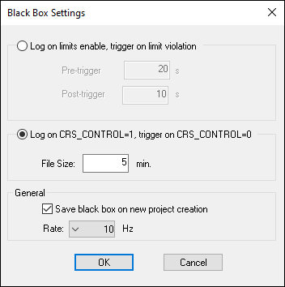
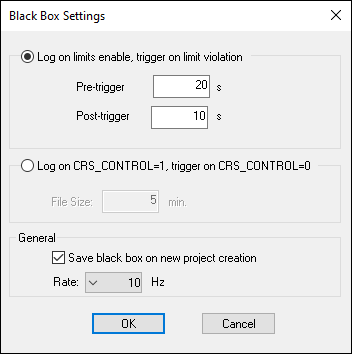

iTest User's Guide
The Blackbox is a data recorder with a circular buffer used to record data at a user-defined rate and length of time. The Blackbox Viewer (bbviewer) displays Blackbox data in a spreadsheet format. For more information, refer to the BBViewer documentation.
 |
NOTE: | You cannot run bbviewer while iTest is running unless the system channel, CRS_CONTROL, is set to 0. |
This document details how to configure Blackbox logging.
The Blackbox settings are defined in the Black Box Settings dialog. This dialog can be opened in Test Manager by right-clicking the Data Logging tree node and selecting Properties or in SolutionBuilder's Blackbox Settings editor.
Blackbox Settings

Use the descriptions provided in the table below to configure the settings.
|
NOTE: | iTest must be restarted for changes to the Blackbox properties to take effect. |
Blackbox Settings
| Setting | Description |
| Log on limits enable, trigger on limit violation | When selected, automated Blackbox logging is enabled. In addition, the Pre-trigger and Post-trigger fields are enabled. When automated Blackbox logging is enabled, iTest will automatically create a Blackbox log file when a channel limit is exceeded. For more information, refer to the Automated Blackbox Logging documentation. |
| Pre-trigger | The number of seconds to save before the limit violation. This field is enabled when the Log on limits enable, trigger on limit violation option is selected. The maximum time is 60 seconds if the rate is 1000 Hz; otherwise, the maximum is 3600 seconds. |
| Post-trigger | The number of seconds to save after the limit violation. This field is enabled when the Log on limits enable, trigger on limit violation option is selected. The maximum time is 60 seconds if the rate is 1000 Hz; otherwise, the maximum is 3600 seconds. |
| Log on CRS_CONTROL=1, trigger on CRS_CONTROL=0 | When selected, Blackbox logging is active when CRS_CONTROL=1. In addition, the File Size field is enabled. |
| File Size | Specify the time in minutes over which the Blackbox collects data. Because the Blackbox is a circular file, it overwrites data at the beginning of the file once this value is exceeded. The default time is 5 minutes. The maximum time is 2 minutes if the rate is 1000 Hz; otherwise, the maximum is 60 minutes. This field is enabled when the Log on CRS_CONTROL=1, trigger on CRS_CONTROL=0 option is selected. |
| Save black box on new project creation | When selected, the Blackbox data file is copied from the previous project when a new project is created. A new project is created by sending the DataArchive New mailslot message to create a new data folder (project). iTest then copies the old Blackbox file from the previous project. If limits are disabled and Blackbox was running due to limit violation, then a truncated Blackbox file is saved (rather than cancelation of the Blackbox). |
| Rate | Specify how often (in Hz) to take a Blackbox log. The higher the number, the more often data is taken. The default is 10 Hz. The list will only include the 1000 Hz option if Support1kHz=TRUE is set in the powertek.ini file. |
The iTest software can automatically create a Blackbox log file when a limit is exceeded. To access this feature, select the Log on limits enable, trigger on limit violation option in the Blackbox settings. The Log on limits enable, trigger on limit violation option causes a Blackbox file to be generated when the first limit is exceeded.
Log on limits, trigger on limit violation Enabled

CRS_CONTROL. DRHoldForReviewDir).GenericMsg StartBlackBox, will manually start Blackbox logging.GenericMsg SaveBlackBox, will cause the Blackbox data to be saved.The log order list for the Blackbox is defined in Test Manager's Log Order Lists tree node or SolutionBuilder's Log Order Lists editor. You can create a log order list for a Blackbox by doing the following:
|
NOTE: | When the rate is 1 kHz, the maximum amount of channels allowed in the Blackbox.lol file is 400. |
|
NOTE: | You cannot add virtual string or virtual string array channels to the Blackbox log order list. |
|
NOTE: | iTest must be restarted for changes to the Blackbox Log Order List to take effect. |